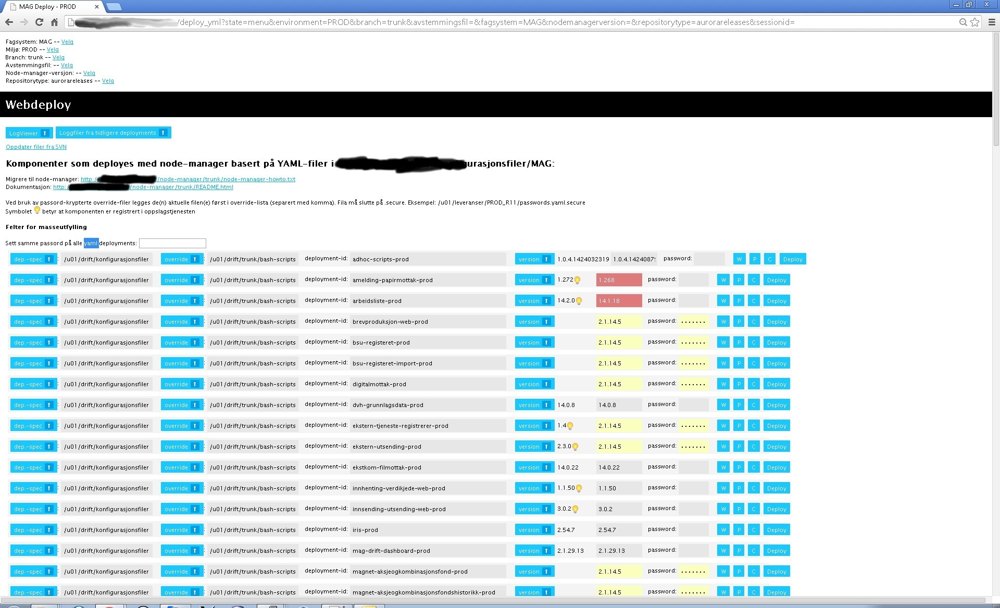

Continuous Delivery

Laget av Eivind Greibrokk
MAG
Modernisering av grunnlagsdata
"Uberørt av menneskehender"
Avbryt meg gjerne dersom du lurer på noe!
Leveransepakke
- Jarfiler
- Databasescript
- Start- og stoppscript
- Dokumentasjon
Bash og Glassfish

Glassfish i cluster

Scriptet gjenoppbygging

Katalogstruktur
Liquibase for databasen
Webdeploy (one-click-deploy)

Clustret Jenkins
KVM --> VMware og NetApp
- Kan flytte virtuelle servere i fart
- KVM-hoster kunne av og til dø uten forvarsel
- Stabil situasjon på disk
Glassfish --> Jetty

Bash --> Python
- Mer enn 10.000 kodelinjer med Bash ble uoversiktlig
- Startet på nytt med Python
- Denne gangen med enhetstester på deploykoden også
- Releaser deploykoden også
- Tenker PAAS:
- Inject database
- Inject storage
- Inject server
Konvergent infrastruktur (FlexPod)
- Hardware, nettverk og disk i samme boks
- Selvbetjeningsløsning for oppretting av miljøer
- Fleksibelt
- Rimeligere
Hurtigreleaser
- Tidligere hadde vi hovedreleaser omtrent hver 2. måned
- Vi har det siste halvåret benyttet hurtigreleaser 2-3 ganger per uke - i tillegg til hovedreleasene
Databasehotell
- Nettopp ferdig i en 0.9-versjon
MAG/EDAG og Presse
"Navnet er kanskje intetsigende, men A-meldingen er det største digitaliseringsprosjektet siden Altinn-portalen."
"Det er levert på tid og under budsjett."
http://www.digi.no/bedriftsteknologi/2015/01/09/feirer-statlig-it-prosjekt
Nåsituasjonen
- Enhetstester og integrasjonstester ved commit
- Sonar, Findbugs, Cobertura ved commit
- Ende-til-ende-tester i akseptansetestmiljøet
- Smoketester i akseptansetestmiljøet
- Cucumbertester i akseptansetestmiljøet
- Noe manuell testing i akseptansetestmiljøet
- Ytelsestest i ytelsestesttestmiljøet
- Webdeploy og avstemmingsfil ved prodsetting
- Ser kun framover. Ruller (nesten) ikke tilbake. For mange eksterne avhengigheter
- Ca. 3 produksjonssettinger per uke i 2015